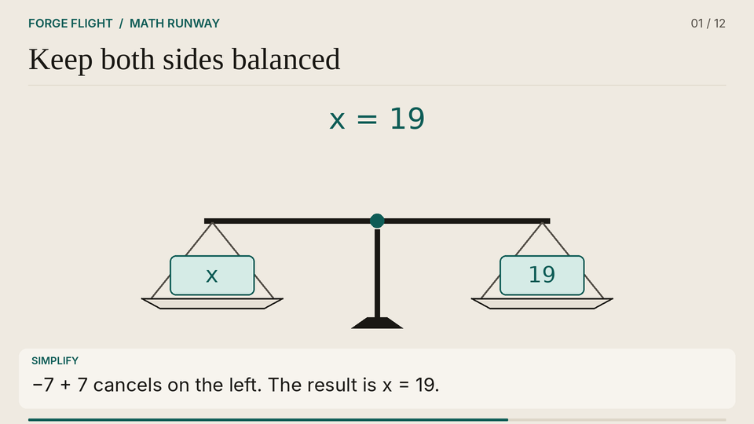

math/algebra 9.6 seconds
01. Keep both sides balanced
Adding 7 to both sides of x − 7 = 12 preserves equality and gives x = 19.


Sequence and model limits
A level balance carries x minus 7 on one pan and 12 on the other. Plus 7 is added equally to both pans. The balance stays level as the equation simplifies to x equals 19.
The balance is an analogy for equality, not a dynamic scale simulation.